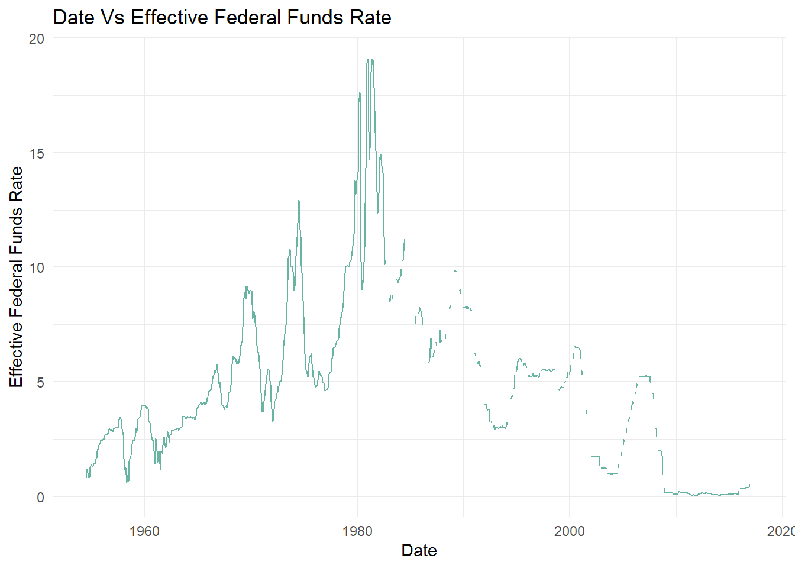
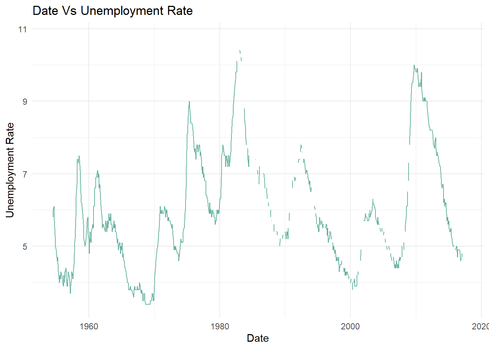
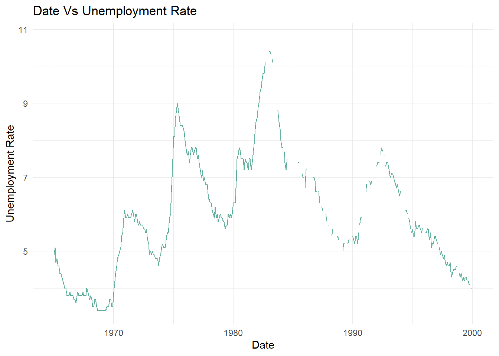
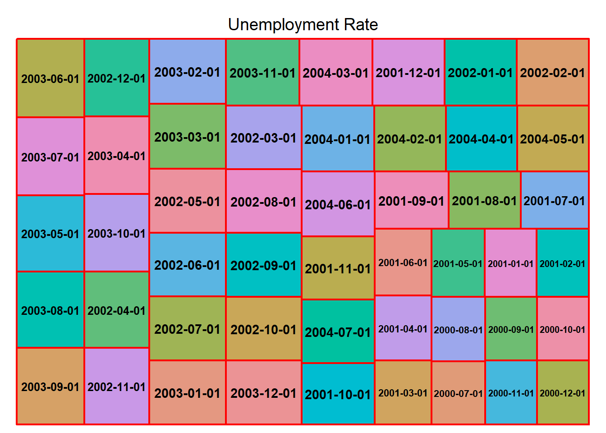

# Preview the first few rows of the datasethead(fed_data)
# A tibble: 6 × 10
Year Month Day Federal Fu…¹ Feder…² Feder…³ Effec…⁴ Real …⁵ Unemp…⁶ Infla…⁷
<dbl> <dbl> <dbl> <dbl> <dbl> <dbl> <dbl> <dbl> <dbl> <dbl>
1 1954 7 1 NA NA NA 0.8 4.6 5.8 NA
2 1954 8 1 NA NA NA 1.22 NA 6 NA
3 1954 9 1 NA NA NA 1.06 NA 6.1 NA
4 1954 10 1 NA NA NA 0.85 8 5.7 NA
5 1954 11 1 NA NA NA 0.83 NA 5.3 NA
6 1954 12 1 NA NA NA 1.28 NA 5 NA
# … with abbreviated variable names ¹`Federal Funds Target Rate`,
# ²`Federal Funds Upper Target`, ³`Federal Funds Lower Target`,
# ⁴`Effective Federal Funds Rate`, ⁵`Real GDP (Percent Change)`,
# ⁶`Unemployment Rate`, ⁷`Inflation Rate`
# Understanding the dimensions of the dataset dim(fed_data)
[1] 904 10
# Identifying the column names of the dataset colnames(fed_data)
# Identifying the data types of the columnssapply(fed_data, class)
Year Month
"numeric" "numeric"
Day Federal Funds Target Rate
"numeric" "numeric"
Federal Funds Upper Target Federal Funds Lower Target
"numeric" "numeric"
Effective Federal Funds Rate Real GDP (Percent Change)
"numeric" "numeric"
Unemployment Rate Inflation Rate
"numeric" "numeric"
table(sapply(fed_data, function(x) typeof(x)))
double
10
sapply(fed_data, function(x) n_distinct(x))
Year Month
64 12
Day Federal Funds Target Rate
29 64
Federal Funds Upper Target Federal Funds Lower Target
5 5
Effective Federal Funds Rate Real GDP (Percent Change)
467 114
Unemployment Rate Inflation Rate
72 107
Briefly describe the data
This dataset gives the information about federal funds rate from 1954 to 2017. The dataset has 904 rows and 10 columns. Based on the above, we can infer that there are 10 columns(variables) are of double datatype. All the columns are readable for the user. Each observation in the dataset provides information of Year, Month, Day, Federal Funds Target Rate, Federal Funds Upper and lower Target, Effective Federal Funds Rate, Real GDP (Percent Change), Unemployment Rate, Inflation Rate.
Tidy Data (as needed)
Is your data already tidy, or is there work to be done? Be sure to anticipate your end result to provide a sanity check, and document your work here.
The data does not look tidy enough to use for various analyses and data visualizations. The columns-Year, Month, Day can be combined into one column-date and use it for visualizations.
# A tibble: 904 × 8
Federal Funds Ta…¹ Feder…² Feder…³ Effec…⁴ Real …⁵ Unemp…⁶ Infla…⁷ date
<dbl> <dbl> <dbl> <dbl> <dbl> <dbl> <dbl> <date>
1 NA NA NA 0.8 4.6 5.8 NA 1954-07-01
2 NA NA NA 1.22 NA 6 NA 1954-08-01
3 NA NA NA 1.06 NA 6.1 NA 1954-09-01
4 NA NA NA 0.85 8 5.7 NA 1954-10-01
5 NA NA NA 0.83 NA 5.3 NA 1954-11-01
6 NA NA NA 1.28 NA 5 NA 1954-12-01
7 NA NA NA 1.39 11.9 4.9 NA 1955-01-01
8 NA NA NA 1.29 NA 4.7 NA 1955-02-01
9 NA NA NA 1.35 NA 4.6 NA 1955-03-01
10 NA NA NA 1.43 6.7 4.7 NA 1955-04-01
# … with 894 more rows, and abbreviated variable names
# ¹`Federal Funds Target Rate`, ²`Federal Funds Upper Target`,
# ³`Federal Funds Lower Target`, ⁴`Effective Federal Funds Rate`,
# ⁵`Real GDP (Percent Change)`, ⁶`Unemployment Rate`, ⁷`Inflation Rate`
Are there any variables that require mutation to be usable in your analysis stream? For example, do you need to calculate new values in order to graph them? Can string values be represented numerically? Do you need to turn any variables into factors and reorder for ease of graphics and visualization?
Time Dependent Visualization
select(fed_data_m, c('date', 'Effective Federal Funds Rate'))
# A tibble: 904 × 2
date `Effective Federal Funds Rate`
<date> <dbl>
1 1954-07-01 0.8
2 1954-08-01 1.22
3 1954-09-01 1.06
4 1954-10-01 0.85
5 1954-11-01 0.83
6 1954-12-01 1.28
7 1955-01-01 1.39
8 1955-02-01 1.29
9 1955-03-01 1.35
10 1955-04-01 1.43
# … with 894 more rows
ggplot(fed_data_m, aes(x=date, y=fed_data_m$`Effective Federal Funds Rate`))+geom_line(color="#69b3a2")+theme_minimal() +labs(title ="Date Vs Effective Federal Funds Rate", y ="Effective Federal Funds Rate", x ="Date")

ggplot(fed_data_m, aes(x=date, y=fed_data_m$`Unemployment Rate`))+geom_line(color="#69b3a2")+theme_minimal() +labs(title ="Date Vs Unemployment Rate", y ="Unemployment Rate", x ="Date")

# Limiting the unemployment rate from the years 1965 to 2000ggplot(fed_data_m, aes(x=date, y=fed_data_m$`Unemployment Rate`))+scale_x_date(limit=c(as.Date("1965-01-01"),as.Date("2000-01-12"))) +geom_line(color="#69b3a2")+theme_minimal() +labs(title ="Date Vs Unemployment Rate", y ="Unemployment Rate", x ="Date")

Visualizing Part-Whole Relationships
fed_filter_data <- fed_data_m %>%filter(date >='2000-07-01', date <='2004-07-01')fed_filter_data
# A tibble: 63 × 8
Federal Funds Ta…¹ Feder…² Feder…³ Effec…⁴ Real …⁵ Unemp…⁶ Infla…⁷ date
<dbl> <dbl> <dbl> <dbl> <dbl> <dbl> <dbl> <date>
1 6.5 NA NA 6.54 0.5 4 2.5 2000-07-01
2 6.5 NA NA 6.5 NA 4.1 2.6 2000-08-01
3 6.5 NA NA 6.52 NA 3.9 2.6 2000-09-01
4 6.5 NA NA 6.51 2.3 3.9 2.5 2000-10-01
5 6.5 NA NA 6.51 NA 3.9 2.6 2000-11-01
6 6.5 NA NA 6.4 NA 3.9 2.6 2000-12-01
7 6.5 NA NA 5.98 -1.1 4.2 2.6 2001-01-01
8 6 NA NA NA NA NA NA 2001-01-03
9 5.5 NA NA NA NA NA NA 2001-01-31
10 5.5 NA NA 5.49 NA 4.2 2.7 2001-02-01
# … with 53 more rows, and abbreviated variable names
# ¹`Federal Funds Target Rate`, ²`Federal Funds Upper Target`,
# ³`Federal Funds Lower Target`, ⁴`Effective Federal Funds Rate`,
# ⁵`Real GDP (Percent Change)`, ⁶`Unemployment Rate`, ⁷`Inflation Rate`
treemap(fed_filter_data, index =c("date"), vSize ="Unemployment Rate",type ="index", border.col=c("red","white"))

Source Code
---title: "Visualizing time and groups"author: "Susmita Madineni"description: "Visualizing Time and Relationships"date: "08/23/2022"format: html: toc: true code-copy: true code-tools: truecategories: - challenge_6 - fed_rate - readr---```{r}#| label: setup#| warning: false#| message: falseinstall.packages("treemap")library(tidyverse)library(lubridate)library(treemap)library(ggplot2)knitr::opts_chunk$set(echo =TRUE, warning=FALSE, message=FALSE)```## Challenge OverviewToday's challenge is to:1) read in a data set, and describe the data set using both words and any supporting information (e.g., tables, etc)2) tidy data (as needed, including sanity checks)3) mutate variables as needed (including sanity checks)4) create at least one graph including time (evolution) - try to make them "publication" ready (optional) - Explain why you choose the specific graph type5) Create at least one graph depicting part-whole or flow relationships - try to make them "publication" ready (optional) - Explain why you choose the specific graph type[R Graph Gallery](https://r-graph-gallery.com/) is a good starting point for thinking about what information is conveyed in standard graph types, and includes example R code.(be sure to only include the category tags for the data you use!)## Read in dataRead in one (or more) of the following datasets, using the correct R package and command. - fed_rate ⭐⭐```{r}library(readr)fed_data <-read_csv("_data/FedFundsRate.csv")View(fed_data)``````{r}# Preview the first few rows of the datasethead(fed_data)# Understanding the dimensions of the dataset dim(fed_data)``````{r}# Identifying the column names of the dataset colnames(fed_data)# Identifying the data types of the columnssapply(fed_data, class)table(sapply(fed_data, function(x) typeof(x)))sapply(fed_data, function(x) n_distinct(x))```### Briefly describe the dataThis dataset gives the information about federal funds rate from 1954 to 2017. The dataset has 904 rows and 10 columns. Based on the above, we can infer that there are 10 columns(variables) are of double datatype. All the columns are readable for the user. Each observation in the dataset provides information of Year, Month, Day, Federal Funds Target Rate, Federal Funds Upper and lower Target, Effective Federal Funds Rate, Real GDP (Percent Change), Unemployment Rate, Inflation Rate. ## Tidy Data (as needed)Is your data already tidy, or is there work to be done? Be sure to anticipate your end result to provide a sanity check, and document your work here.The data does not look tidy enough to use for various analyses and data visualizations. The columns-Year, Month, Day can be combined into one column-date and use it for visualizations. ```{r}fed_data_m <- fed_data %>%mutate(date =str_c(Month,Day,Year, sep ="/"), date =mdy(date)) %>%select(-c(Month, Day, Year))fed_data_m```Are there any variables that require mutation to be usable in your analysis stream? For example, do you need to calculate new values in order to graph them? Can string values be represented numerically? Do you need to turn any variables into factors and reorder for ease of graphics and visualization?## Time Dependent Visualization```{r}select(fed_data_m, c('date', 'Effective Federal Funds Rate'))select(fed_data_m, c('date', 'Unemployment Rate'))``````{r}ggplot(fed_data_m, aes(x=date, y=fed_data_m$`Effective Federal Funds Rate`))+geom_line(color="#69b3a2")+theme_minimal() +labs(title ="Date Vs Effective Federal Funds Rate", y ="Effective Federal Funds Rate", x ="Date")``````{r}ggplot(fed_data_m, aes(x=date, y=fed_data_m$`Unemployment Rate`))+geom_line(color="#69b3a2")+theme_minimal() +labs(title ="Date Vs Unemployment Rate", y ="Unemployment Rate", x ="Date")``````{r}# Limiting the unemployment rate from the years 1965 to 2000ggplot(fed_data_m, aes(x=date, y=fed_data_m$`Unemployment Rate`))+scale_x_date(limit=c(as.Date("1965-01-01"),as.Date("2000-01-12"))) +geom_line(color="#69b3a2")+theme_minimal() +labs(title ="Date Vs Unemployment Rate", y ="Unemployment Rate", x ="Date")```## Visualizing Part-Whole Relationships```{r}fed_filter_data <- fed_data_m %>%filter(date >='2000-07-01', date <='2004-07-01')fed_filter_data``````{r}treemap(fed_filter_data, index =c("date"), vSize ="Unemployment Rate",type ="index", border.col=c("red","white"))```